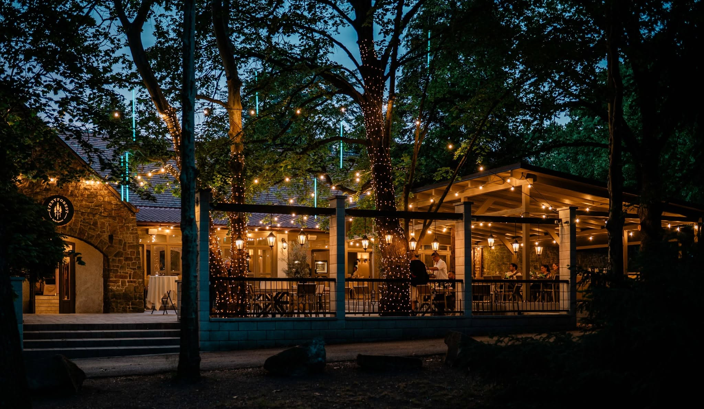
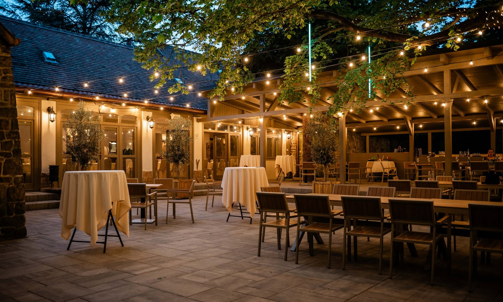

A Helyszín
Hosszú keresgélés után megtaláltuk azt a helyet, amely rögtön mindkettőnket elvarázsolt. Találtunk egy olyan otthonos, meghitt fészket, ahol a természet lágy ölelését tökéletesen egészítik ki a hangulatos fények és a barátságos személyzet.
Az esküvőnket Budakeszi és Telki között, a Pilisi Parkerdő sűrű lombkoronás fái között rejtőző Dudok Rendezvényházban tartjuk. Úgy éreztük, ez a festői, erdőszéli környezet a tökéletes hely arra, hogy Veletek együtt ünnepeljünk!
Alig várjuk, hogy ezen a békés, gyönyörű helyen köszönthessünk benneteket és együtt táncoljunk hajnalig!

